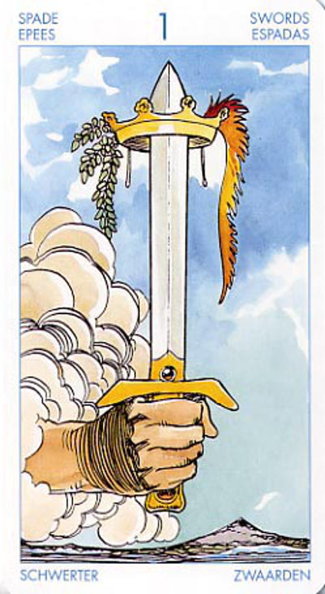

Туз Мечей
Туз Мечей олицетворяет мысль и способность суждения. Меч разрушает все иллюзии, помогая увидеть вещи в их истинном свете.
Прямое положение: триумф, чрезмерность во всем, завоевание, триумф силы. Эта карта говорит о большой силе, как в любви, так и в ненависти.
Значение: В раскладе может означать приобретение ясности в чем-то, будь то решение сложной задачи, выяснение отношений с партнером или преодоление сомнений. Недаром в русском языке слово «рассекать» означает также «понимать», «решать» (проблему), вспомните Гордиев узел.
Может предоставить вам возможность порвать со старыми привязанностями, которые больше вам ни к чему, или же с какой-то негативной ситуацией.
Эта карта также может свидетельствовать о том, что вы входите в фазу продуктивной интеллектуальной работы.
Меч - это инструмент осуществления перемен, а данный меч может указывать на полный разрыв, который возвещает о новом начале.
Каждый из Тузов олицетворяет некий шанс. В противоположность следующей карте (Двойке Мечей), символизирующей разрушительную силу сомнения, здесь работа ума осуществляется в наиболее чистой, светлой и освобождающей форме.
На уровне тела туз мечей может указывать на начало страсти, болезни, какого-либо начинания. Через туз мечей может идти также и инициация, то есть подключение к чему-то новому. В целом туз мечей - самая "энергетическая" карта младших арканов.
Ловушка - Меч на службе низменных интересов. Насилие как способ решения всех проблем.
Карта достижения и триумфа, победы.Рождение (в том числе и ребенка).Сильная страсть. Эмоции бьющие через край.Очень успешная карьера.
Перевернутый – значит, проблема не решается. Иногда может означать расставание с кем-то или удар Судьбы. Болезни. В худшем случае туз мечей может означать подрыв жизненных сил, в принципе, летальный исход. Однако это очень редкое явление. Показания одной карты в раскладе обычно бывает недостаточно.
Перевернутая позиция карты может означать попытку инициации, попытку движения при еще не сформировавшихся окончательно условиях. То есть, Среда как бы задавливает начинание, но, в любом случае, туз мечей всегда означает какую-то пробу сил.
Ключевые слова: Враждебность.
Англичане считали эту карту триумфом любви и ненависти, взлетов и падений.